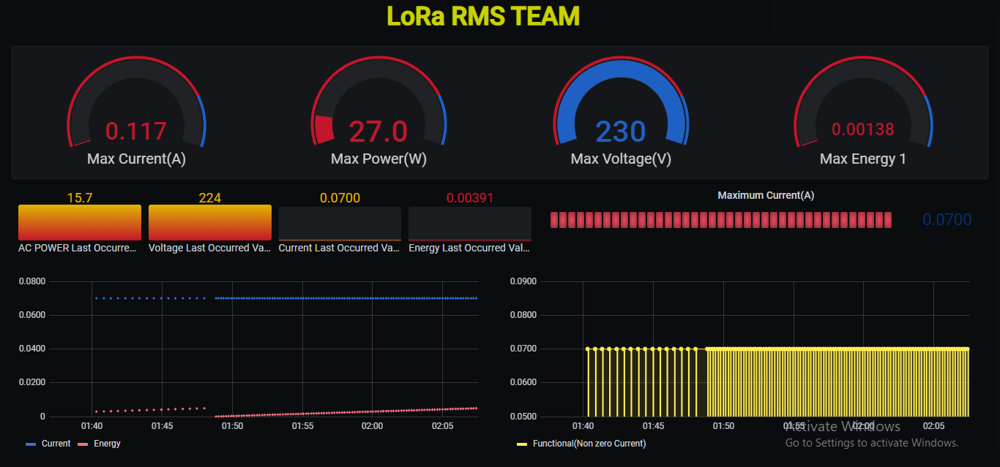

Grafana - InfluxDB Device parameter monitoring Dashboard
Posted on May 17, 2021

Humans are often better to understand visual patterns presented with a graph or a chart and thus it becomes easy to analyse and monitor real time data.
Node-RED
Let’s start with Node-Red. It is a programming tool for wiring together hardware devices as it makes easy to wireflow using nodes that can be deployed.
The data that is transmitted by MQTT reaches the broker where Node-RED subscribed which is catched by MQTTin.
Function node is javascript editor that is used to fetch in required information from data that is being transmitted it helps as one can get rid of unwanted information to avoid clutter of data and JSON node used to convert it into JSON format.
One of the most important functions of Node-red is the debug window used to display data on Node-Red, it is found on the right hand side of the program, tab identified by a small bug.
Debug window allows to check the consistency of actual data and received data.The desired data is being injected in InfluxDB using InfluxDBout node.
Given below is the Node-RED flow for for the above mentioned nodes.
Installation Guide : Node-RED
Node-RED installation locally or on CloudInfluxDB
InfluxDB is a time series database that captures and stores data captured by nodered in table format.
It is optimized for fast, high-availability storage and retrieval of time series data.Data fetched from Node-RED is stored into InfluxDB as to use this real time data for further analysis.
We store energy parameters like Voltage, Current, Power Consumed,Energy Consumed and Power Generated. We also store node readings like SNR and RSSI.
All the energy parameters and the node parameters are stored into a database called homemon1 within measurement named homemonfinal .
Given below is the InfluxDB table homemonfinal in dashboard named homemon1.
Installation Guide : InfluxDB OSS
InfluxDB OSS installation locally or on CloudGrafana
Grafana is multi platform open source analytics for interactive visulization of web applications that is used for visual representation of real-time data for application analytics.
It provides charts, graphs, and alerts for the web when connected to data source which in our case is InfluxDB.
It can be expanded using plug in system and complex dashboard can be created using query builders. Grafana is divided into a front end and back end, written in TypeScript and Go, respectively.
Once datasource is added we use Graph,Gauge,Time Series,Bar gauge to display the data where we compared AC and DC power,Displayed last occured value of RSSI,SNR,Plot graph for functionality of panel.NOD1AC,NOD2AC,NOD3AC,NOD1SOL,NOD2SOL,NOD3SOL were the dashboard created for different nodes.
So let’s see some Grafana commands that we have used in the dashboard.
- Creating Gauge to compare AC and Dc Power
- Creating Graph to check the functionality of panel
SELECT mean("Pgen") AS "DC POWER", mean("Power") AS "AC POWER" FROM "homemonfinal" WHERE ("NodeID" = 'nod2sol') AND $timeFilter GROUP BY time($__interval) fill(null)
SELECT min("Current") AS "Functional(Non zero Current)" FROM "homemonfinal" WHERE ("NodeID" = 'nod2sol') AND $timeFilter GROUP BY time($__interval) fill(none)
Below is the Grafana dashboard for NOD1MU.
Below is the Grafana dashboard for NOD1SOL.